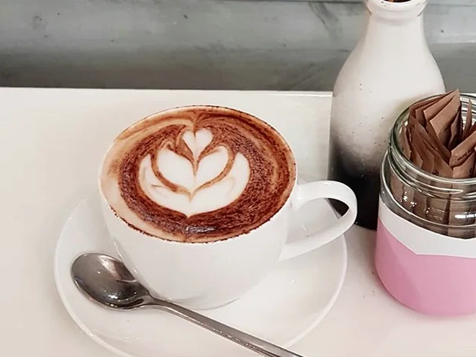

House-made cakes and biscuits

COZY BY DESIGNTHE LOCAL EXPERIENCE
Pull up an apple-crate seat.
Picnic's own customer story remembers warm scones with homemade pumpkin jam, cakes baking nearby and jars of homegrown preserves waiting in the cupboard.
It is the sort of small Hobart place where the details matter: something freshly made, a good-sized coffee and time for a friendly goodbye.